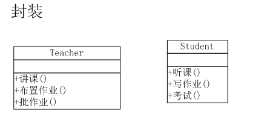
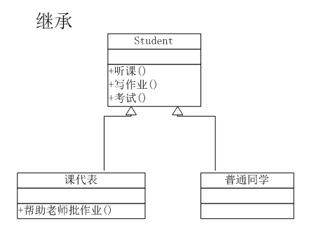
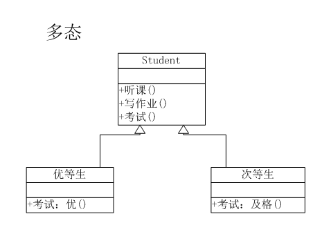
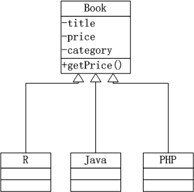

24 面向对象编程
24.1 程序设计的范式
程序设计的范式：
面向过程（Procedural Programming）：将问题分解为一系列相互关联的过程或函数，并按照一定的顺序执行这些过程以解决问题。
基于对象（Object-Based Programming）：基于对象范式强调将数据和操作封装在一起，形成独立的对象。每个对象都拥有属性和方法，通过对象之间的交互来实现功能。也称为基于原型（prototyped-based）
-
面向对象（Object-Oriented Programming, OOP）：面向对象范式强调将现实世界的事物抽象为对象，通过类（Class）和实例（Instance）来组织和管理代码。
基于泛型函数 OOP： 方法属于泛型函数，函数调用，内部组件也是函数。
generic_function(object, arg2, arg3)，如S3类、S4类基于原型（prototyped-based）：如
ggproto？基于类（class-based） ：方法属于对象或类，对象封装了数据（属性）和 行为（方法）。
object.method(arg1, arg2)，如 R6类
24.2 OOP
特点：
-
封装（encapsulation）：是把客观事物封装成抽象的类，并且类可以把自己的数据和方法只让可信的类或者对象操作，对不可信的进行信息隐藏。

-
继承（inheritance）：子类（child class）自动共享父类（parent class）数据结构和方法的机制，这是类之间的一种关系。在定义和实现一个类的时候，可以在一个已经存在的类的基础之上来进行，使用现有类的所有功能，并在无需重新编写原来的类的情况下对这些功能进行扩展。通过继承创建的新类称为“子类”或“派生类”；被继承的类称为“基类”、“父类”或“超类”（super class）。

-
多态（polymorphism）：由继承而产生的相关的不同的类，其对象对同一消息做出不同的响应。将函数的接口与其实现分开考虑，对不同类型的输入使用相同的函数形式。

OO 系统
类 （class）定义对象的集合。
方法（method）描述对象的行为。
属性（fields） 即该类的每个实例（instance）所拥有的属性
方法调度（method dispatch） 在给定类的情况下查找正确方法的过程称为方法调度
24.3 R 中的对象
R中存在的一切都是一个对象，包括 base objects 和 OO objects 。

24.3.1 base objects
base 对象来自 S 语言
base 对象和 OO 对象之间的区别在于 OO 对象具有class属性
虽然只有 OO 对象具有类class属性，但每个对象都具有基本类型（base type）：包括基本数据类型（数值，字符，逻辑，复数等），数据结构 （data.frame，list ），function（闭包、内置、特殊），环境，类，…… 等等。
24.3.2 OO objects：class 属性
S3：是 R 的第一个 OOP 系统，Statistical Models in S
S4：是对 S3 的正式和严格的重写，Programming with Data，S4 在默认安装(
options()$defaultPackages) methods 包中实现。Bioconductor项目使用的就是S4类。R6：构建在环境之上的封装OOP，具有引用语义，modified in-place 而非“修改时复制（copy-on-modify）”，在 R6 包中实现。
prototype（原型）：模糊类和类（对象）的实例之间的区别，通常指的是一个对象的初始实例，它定义了一组属性和方法，其他对象可以基于这个原型进行创建。例如ggplot2 包的ggproto类
24.4 封装
Show the code
# 定义老师对象和行为
teacher <- function(x, ...) UseMethod("teacher")
teacher.lecture <- function(x) print("讲课")
teacher.assignment <- function(x) print("布置作业")
teacher.correcting <- function(x) print("批改作业")
teacher.default<-function(x) print("你不是teacher")
# 定义同学对象和行为
student <- function(x, ...) UseMethod("student")
student.attend <- function(x) print("听课")
student.homework <- function(x) print("写作业")
student.exam <- function(x) print("考试")
student.default<-function(x) print("你不是student")
# 定义两个变量，a老师和b同学
a<-'teacher'
b<-'student'
# 给老师变量设置行为
attr(a,'class') <- 'lecture'
# 执行老师的行为
teacher(a)
#> [1] "讲课"
# 给同学变量设置行为
attr(b,'class') <- 'attend'
# 执行同学的行为
student(b)
#> [1] "听课"
attr(a,'class') <- 'assignment'
teacher(a)
#> [1] "布置作业"
attr(b,'class') <- 'homework'
student(b)
#> [1] "写作业"
attr(a,'class') <- 'correcting'
teacher(a)
#> [1] "批改作业"
attr(b,'class') <- 'exam'
student(b)
#> [1] "考试"
# 定义一个变量，既是老师又是同学
ab<-'student_teacher'
# 分别设置不同对象的行为
attr(ab,'class') <- c('lecture','homework')
# 执行老师的行为
teacher(ab)
#> [1] "讲课"
# 执行同学的行为
student(ab)
#> [1] "写作业"24.5 继承
Show the code
# 给同学对象增加新的行为
student.correcting <- function(x) print("帮助老师批改作业")
# 辅助变量用于设置初始值
char0 = character(0)
# 实现继承关系
create <- function(classes=char0, parents=char0) {
mro <- c(classes)
for (name in parents) {
mro <- c(mro, name)
ancestors <- attr(get(name),'type')
mro <- c(mro, ancestors[ancestors != name])
}
return(mro)
}
# 定义构造函数，创建对象
NewInstance <- function(value=0, classes=char0, parents=char0) {
obj <- value
attr(obj,'type') <- create(classes, parents)
attr(obj,'class') <- c('homework','correcting','exam')
return(obj)
}
# 创建父对象实例
StudentObj <- NewInstance()
# 创建子对象实例
s1 <- NewInstance('普通同学',classes='normal', parents='StudentObj')
s2 <- NewInstance('课代表',classes='leader', parents='StudentObj')
# 给课代表，增加批改作业的行为
attr(s2,'class') <- c(attr(s2,'class'),'correcting')
# 查看普通同学的对象实例
s1
#> [1] "普通同学"
#> attr(,"type")
#> [1] "normal" "StudentObj"
#> attr(,"class")
#> [1] "homework" "correcting" "exam"
attr(s1,"type")
#> [1] "normal" "StudentObj"
attr(s1,"class")
#> [1] "homework" "correcting" "exam"
# 查看课代表的对象实例
s2
#> [1] "课代表"
#> attr(,"type")
#> [1] "leader" "StudentObj"
#> attr(,"class")
#> [1] "homework" "correcting" "exam" "correcting"
attr(s2,"type")
#> [1] "leader" "StudentObj"
attr(s2,"class")
#> [1] "homework" "correcting" "exam" "correcting"24.6 多态
Show the code
# 创建优等生和次等生，两个实例
e1 <- NewInstance('优等生',classes='excellent', parents='StudentObj')
e2 <- NewInstance('次等生',classes='poor', parents='StudentObj')
# 修改同学考试的行为，大于85分结果为优秀，小于70分结果为及格
student.exam <- function(x,score) {
p<-"考试"
if(score>85) print(paste(p,"优秀",sep=""))
if(score<70) print(paste(p,"及格",sep=""))
}
# 执行优等生的考试行为，并输入分数为90
attr(e1,'class') <- 'exam'
student(e1,90)
#> [1] "考试优秀"
# 执行次等生的考试行为，并输入分数为66
attr(e2,'class') <- 'exam'
student(e2,66)
#> [1] "考试及格"24.7 S3类
构造S3类的三原则
命名
new_class_name()base object 有一个参数，每个属性有一个参数。
检查base object的类型和每个属性的类型
http://blog.fens.me/r-class-s3/
S3 对象是至少具有一个属性（其他属性可用于存储其他数据）的base type( 有mode属性)。
Show the code
f <- factor(c("a", "b", "c"))
# 基本类型
typeof(f)
#> [1] "integer"
# 其他属性
attributes(f)
#> $levels
#> [1] "a" "b" "c"
#>
#> $class
#> [1] "factor"剥离类属性，保留其他属性
Show the code
unclass(f)
#> [1] 1 2 3
#> attr(,"levels")
#> [1] "a" "b" "c"查看方法调度，generic.class()
Show the code
library(sloop)
s3_dispatch(print(f))
#> => print.factor
#> * print.default24.7.1 创建S3类和实例
要使对象成为S3 类的实例，您只需设置类属性即可。
Date 类
difftime 类
有效性验证
Show the code
new_factor <- function(x = integer(), levels = character()) {
stopifnot(is.integer(x))
stopifnot(is.character(levels))
structure(
x,
levels = levels,
class = "factor"
)
}
new_factor(1:5, "a")
#> Error in as.character.factor(x): malformed factor
new_factor(0:1, "a")
#> Error in as.character.factor(x): malformed factorShow the code
validate_factor <- function(x) {
values <- unclass(x)
levels <- attr(x, "levels")
if (!all(!is.na(values) & values > 0)) {
stop(
"All `x` values must be non-missing and greater than zero",
call. = FALSE
)
}
if (length(levels) < max(values)) {
stop(
"There must be at least as many `levels` as possible values in `x`",
call. = FALSE
)
}
x
}
validate_factor(new_factor(1:5, "a"))
#> Error: There must be at least as many `levels` as possible values in `x`
validate_factor(new_factor(0:1, "a"))
#> Error: All `x` values must be non-missing and greater than zero如果希望用户从类中构造对象，还应该提供一个帮助程序方法
- 强制类型转换
- 复杂对象字符串表示
- 复杂对象由多个简单组件指定
Show the code
POSIXct <- function(year = integer(),
month = integer(),
day = integer(),
hour = 0L,
minute = 0L,
sec = 0,
tzone = "") {
ISOdatetime(year, month, day, hour, minute, sec, tz = tzone)
}
POSIXct(2020, 1, 1, tzone = "Asia/Shanghai")
#> [1] "2020-01-01 CST"24.7.2 泛型函数和方法调度
泛型函数（generic function）
Show the code
my_new_generic <- function(x) {
UseMethod("my_new_generic")
}Show the code
library("sloop")
x <- matrix(1:10, nrow = 2)
s3_dispatch(mean(x))
#> mean.matrix
#> mean.integer
#> mean.numeric
#> => mean.default=>指示调用的方法
*指示此处已定义但未调用的方法，“default”类是一个特殊的伪类。这不是一个真正的类，但包含它是为了可以定义一个标准回退，每当特定于类的方法不可用时，就会找到该回退。
Show the code
mean
#> function (x, ...)
#> UseMethod("mean")
#> <bytecode: 0x000002089db94298>
#> <environment: namespace:base>
s3_methods_generic("mean")| generic | class | visible | source |
|---|---|---|---|
| mean | Date | TRUE | base |
| mean | default | TRUE | base |
| mean | difftime | TRUE | base |
| mean | POSIXct | TRUE | base |
| mean | POSIXlt | TRUE | base |
| mean | quosure | FALSE | registered S3method |
| mean | vctrs_vctr | FALSE | registered S3method |
Show the code
s3_methods_class("ordered")| generic | class | visible | source |
|---|---|---|---|
| as.data.frame | ordered | TRUE | base |
| Ops | ordered | TRUE | base |
| relevel | ordered | FALSE | registered S3method |
| scale_type | ordered | FALSE | registered S3method |
| Summary | ordered | TRUE | base |
| type_sum | ordered | FALSE | registered S3method |
24.7.3 示例
Show the code
# S3 方法示例
generic_function <- function(x, y) {
UseMethod("generic_function")
}
# 为numeric类定义方法
generic_function.numeric <- function(x, y) {
print(x + y)
}
# 为character类定义方法
generic_function.character <- function(x, y, sep = " " ) {
print(paste(x, y, sep = sep))
}
# 调用函数
generic_function(1, 2) # 输出 3
#> [1] 3
generic_function("Hello", "World") # 输出 "HelloWorld"
#> [1] "Hello World"
# + 多态 示例
`+` <- function(x, y) {
UseMethod("+")
}
# 为character类定义方法
`+.character`<- function(x, y) {
print(paste0(x, y))
}
"a"+"b"+"c"
#> [1] "ab"
#> [1] "abc"24.8 S4类
创建类 setClass() ，创建泛型函数 setGeneric() ，创建方法 setMethod()
http://blog.fens.me/r-class-s4/
此外，S4 提供多重继承（即一个类可以有多个父级）和多重调度（即方法调度可以使用多个参数的类）
S4 的一个重要新组件是 slot，它是对象的命名组件，使用专用子集运算符 @（发音为 at）进行访问。 accessor functions @
Show the code
library(methods)24.8.1 创建类、实例化、泛型函数和方法
Show the code
setClass(
#类名
"Person",
# 名称和类的命名字符向量
slots = c(name = "character", age = "numeric"),
# 默认值列表
prototype = list(name = NA_character_, age = NA_real_)
)
# 实例化
x <- new("Person", name = "XXX",age=24)
str(x)
#> Formal class 'Person' [package ".GlobalEnv"] with 2 slots
#> ..@ name: chr "XXX"
#> ..@ age : num 24
x@name
#> [1] "XXX"
slot(x,"age")
#> [1] 24
# 泛型函数 ： 定义
setGeneric("age", function(x) standardGeneric("age"))
#> [1] "age"
setGeneric("age<-", function(x, value) standardGeneric("age<-"))
#> [1] "age<-"
setGeneric("name", function(x) standardGeneric("name"))
#> [1] "name"
setGeneric("name<-", function(x, value) standardGeneric("name<-"))
#> [1] "name<-"
# 方法 ： 实现
setMethod("age", "Person", function(x) x@age)
setMethod("age<-", "Person", function(x, value) {
x@age <- value
x
})
age(x)
#> [1] 24
age(x) <- 13
age(x)
#> [1] 13
setMethod("show", "Person", function(object) {
cat(is(object)[[1]], "\n",
" Name: ", object@name, "\n",
" Age: ", object@age, "\n",
sep = ""
)
})
sloop::otype(x)
#> [1] "S4"
sloop::ftype(age)
#> [1] "S4" "generic"
x
#> Person
#> Name: XXX
#> Age: 13
setMethod("name", "Person", function(x) x@name)
name(x)
#> [1] "XXX"
setMethod("name<-", "Person", function(x, value) {
x@name <- value
validObject(x)
x
})
name(x) <- "Lily"
name(x)
#> [1] "Lily"24.8.2 继承
Show the code
setClass("Employee",
contains = "Person",
slots = c(
boss = "Person"
),
prototype = list(
boss = new("Person")
)
)
str(new("Employee"))
#> Formal class 'Employee' [package ".GlobalEnv"] with 3 slots
#> ..@ boss:Formal class 'Person' [package ".GlobalEnv"] with 2 slots
#> .. .. ..@ name: chr NA
#> .. .. ..@ age : num NA
#> ..@ name: chr NA
#> ..@ age : num NA24.8.3 多重继承和多重调度
。。。
24.9 原型类
OOP风格又分为两种风格：一种是基于对象的编程（Object-Based Programming），也称原型编程（Prototype Programming）；另一种是基于类的编程（Class-Based Programming）。proto工具包采用的是前者。因为没有“类”的概念，原型编程可以更自由地定义对象。
proto对象的元素分为两类：一类称为属性（field），在R中就是变量（variable），如oo中的x；另一类称为方法（method），在R中就是函数（function）
24.9.1 ggproto
参考 ggplot2-book.org/internals#sec-ggproto
Show the code
NewObject <- ggproto(
`_class` = NULL,
`_inherits` = NULL
)
NewObject
#> <ggproto object: Class gg>
#> _inherits: NULLShow the code
# 新类
NewClass <- ggproto("NewClass", NULL,
# fields 默认值
geom=NA,
# methods
)
NewClass
#> <ggproto object: Class NewClass, gg>
#> geom: NAShow the code
# 实例
instance <- ggproto(NULL, NewClass,
# 字段赋值
geom="point"
)
instance
#> <ggproto object: Class NewClass, gg>
#> geom: point
#> super: <ggproto object: Class NewClass, gg>Show the code
# 继承
NewSubClass <- ggproto("NewSubClass", NewClass)
NewSubClass
#> <ggproto object: Class NewSubClass, NewClass, gg>
#> geom: NA
#> super: <ggproto object: Class NewClass, gg>24.10 R6 类
R6::R6Class(classname = NULL，public = list)
http://blog.fens.me/r-class-r6/

Show the code
library(R6)
library(R6)
Book <- R6Class(
"Book",
# 定义私有变量
private = list(
title = NA,
price = NA,
category = NA
),
# 定义公共方法
public = list(
initialize = function(title, price, category) {
private$title <- title
private$price <- price
private$category <- category
},
getPrice = function() {
private$price
}
)
)
Book
#> <Book> object generator
#> Public:
#> initialize: function (title, price, category)
#> getPrice: function ()
#> clone: function (deep = FALSE)
#> Private:
#> title: NA
#> price: NA
#> category: NA
#> Parent env: <environment: R_GlobalEnv>
#> Locked objects: TRUE
#> Locked class: FALSE
#> Portable: TRUE
R <- R6Class("R", # 子类R图书
inherit = Book)
Java <- R6Class("JAVA", # 子类JAVA图书
inherit = Book)
Php <- R6Class("PHP", # 子类PHP图书
inherit = Book)Show the code
r1<-R$new("R的极客理想-工具篇",59,"R")
r1$getPrice()
#> [1] 59
j1<-Java$new("Java编程思想",108,"JAVA")
j1$getPrice()
#> [1] 108
p1<-Java$new("Head First PHP & MySQL",98,"PHP")
p1$getPrice()
#> [1] 98Show the code
Book <- R6Class(
"Book",
private = list(
title = NA,
price = NA,
category = NA
),
public = list(
initialize = function(title, price, category) {
private$title <- title
private$price <- price
private$category <- category
},
getPrice = function() {
p <- private$price * self$discount()
print(paste("Price:", private$price, ", Sell out:", p, sep = ""))
},
discount = function() {
0.9
}
)
)Show the code
r1<-R$new("R的极客理想-工具篇",59,"R")
r1$getPrice()
#> [1] "Price:59, Sell out:37.17"
j1<-Java$new("Java编程思想",108,"JAVA")
j1$getPrice()
#> [1] "Price:108, Sell out:75.6"
p1<-Java$new("Head First PHP & MySQL",98,"PHP")
p1$getPrice()
#> [1] "Price:98, Sell out:68.6"